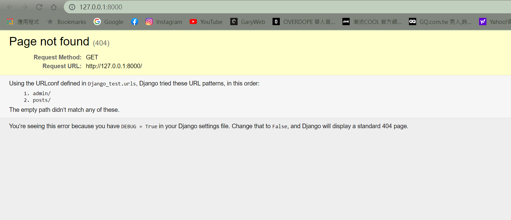

Django 建立應用程式(App)
建立App
在Terminal視窗中，輸入以下指令來建立應用程式(APP)：
其中的檔案功能，簡單說明如下：
- migrations: 記錄資料庫與models.py中的欄位同步歷程
- __init__.py: 這個檔案顯示了Django的每個應用程式(APP)，事實上就是Python套件(Package)
- admin.py: 可以用來定義或客製化這個應用程式(APP)在Django後台(Django Administration)的欄位顯示方式
- apps.py: 這個Django應用程式的設定檔
- models.py: 定義Django應用程式的資料庫欄位
- tests.py: 能夠撰寫Django應用程式的自動化測試腳本
- views.py: 負責接收瀏覽器的請求，進行邏輯的處理後，回傳執行結果給瀏覽器
在INSTALL_APPS的地方將應用程式(posts)進行加入的動作，如下範例：
應用網址
在posts應用程式資料夾下，新增urls.py，接著即可在其中定義網址，如下範例：
應用程式(APP)的網址定義完成後，接下來就要註冊到Django專案主程式，讓它知道有posts這個應用程式(APP)的存在
而註冊的方式就是開啟專案主程式potrip資料夾下的urls.py檔案，將posts應用程式(APP)的網址新增至urlpatterns中，如下範例：
Django應用程式檢視函式(View Function)
接著開啟views.py來撰寫對應的檢視函式(View Function)，如下範例：檢視函式(View Function)其實就是Python的函式(Function)，但是必須要有request參數。而回傳給瀏覽器的內容須引用HttpResponse類別，這邊示範單純回傳一個字串給瀏覽器
執行python manage.py runserver，可以看到畫面後面加上posts